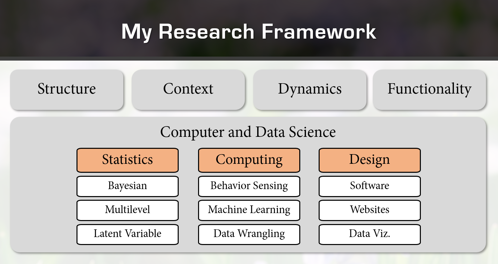

Research Topics
Clinical Topics
Depression – We are interested in improving the assessment and treatment of depression. In particular, we are interested in (a) developing computational depression screening tools that can be deployed in under-served (e.g., remote or low resource) communities, (b) studying the connections between mood, depression, and interpersonal functioning, and (c) understanding the psychotherapeutic processes that contribute to recovery from depression.
Posttraumatic Stress Disorder – We are interested in how individuals who survive traumatic events respond to, make sense of, and communicate about their experiences. Toward this end, we collect and analyze trauma narratives and impact statements from patients seeking treatment for PTSD and from community members who experienced traumatic events but did not develop PTSD. We are using observational methods to measure and analyze the patterns of behaviors, emotions, and cognitions evident in these narratives and statements. Our goals are to improve PTSD assessment and to deepen clinical understanding of the psychological processes that contribute to the development, maintenance, and recovery from PTSD.
Clinical decision-making – We are interested in developing tools to support the clinical decision-making of mental healthcare workers such as (a) determining the optimal time to discharge psychiatric inpatients from the hospital, and (b) estimating patients’ risk of dropping out of psychotherapy early. This topic is deeply connected to the methodology of predictive machine learning (see below).
Structure of psychopathology – We are interested in advancing scientific knowledge about the ways in which psychiatric signs and symptoms organize into transdiagnostic dimensions or “spectra.” As part of this effort, we are working on creating an R package for the “Bass-Ackwards” factor analytical technique (Goldberg, 2006; Forbes, 2020). We are also interested in disentangling measures of dysfunction and traits/symptoms.
Behavioral synchrony – We are interested in studying the emergence of behavioral synchronization between members of interacting dyads (e.g., therapists and patients or parents and children). We are applying this to studying the development of the working alliance (i.e., therapeutic relationship) during psychotherapy for depression and the communication dynamics between parents and children at high risk of suicide. As part of this effort, we are working on creating an R package for the windowed cross-correlation technique for quantifying behavioral synchrony (Boker et al., 2002).
Methodological Topics
Interrater reliability statistics – We are interested in developing statistical techniques that quantify the degree of reliability (e.g., agreement or consistency) between raters in observational and judgment studies. As part of this effort, we are working on finalizing the agreement R package for chance-adjusted indexes of categorical agreement and are working on integrating insights and tools from Bayesian statistics and generalizability theory in the varde R pacakge.
Circumplex statistics – We are interested in developing statistical techniques that leverage the circular structure of circumplex models of affect and interpersonal functioning. As part of this effort, we are working on expanding the circumplex R package with additional functionality and developing new extensions of the Structural Summary Method (Gurtman, 1992; Zimmermann & Wright, 2017) that accommodate multilevel (e.g., clustered and longitudinal) data and latent variables.
Observational methods – We are interested in measuring behavior as it actually occurs using human and algorithmic observers. Toward this end, we are working on creating databases of observational records (e.g., videos) to share with other researchers and are developing software and educational resources to aid in the collection and analysis of observational data.
Applied machine learning – We are interested in applying recent advances in predictive modeling techniques to the study of human behavior (e.g., to aid in clinical decision-making and observational measurement). We are particularly interested in model evaluation, explanation, and comparison techniques that combine insights and techniques from statistical inference and machine learning.
Bayesian multilevel modeling – We are interested in leveraging the wonderful flexibility of Bayesian mixed effects models to answer applied questions about multilevel (e.g., clustered or longitudinal) data. We are also interested in adapting this framework to improve estimation in other topics (e.g., inter-rater reliability statistics, circumplex statistics, and comparing machine learning models).
Research Funding
Current Funding
- “COBRE Computational Assessment of Communicative Behaviors in Posttraumatic Stress”
- National Institutes of Health (COBRE)
- Girard (PI)
- 01/2025 – 12/2025
- “Context-Adaptive Multimodal Informatics for Psychiatric Discharge Planning”
- R01, National Institutes of Health (NIMH)
- Baker (PI), Co-Is: Girard, Morency
- 04/2021 – 02/2025
Completed Funding
- “Kansas Data Science Training Pathways | An Integrated Model”
- National Science Foundation (EPSCoR REI)
- Girard (PI)
- 01/2024 – 12/2024
- “Novel Scalable Mental Health Screening Procedures on Ubiquitous Sensing Devices”
- Googler-Initiated Grant, Google LLC
- Girard (PI)
- 11/2022
- “Multimodal Dynamics of Parent-Child Interactions and Suicide Risk”
- R21, National Institutes of Health (NIMH)
- Burke (PI), Co-Is: Girard, Li, Morency
- 09/2022 – 07/2023
- “Towards Automated Multimodal Behavioral Screening for Depression”
- Pittsburgh Health Data Alliance (CMLH)
- Morency (PI), Co-I: Girard
- 03/2019 – 02/2021
- “Dyadic Behavior Informatics for Psychotherapy Process and Outcome”
- National Science Foundation (IIS, SCH)
- Cohn, Morency, Swartz (PIs), Co-Is: Bylsma, Fournier, Girard
- 09/2020 – 08/2022
Research Framework
Affective Communication
The substantive focus of our work is on how humans communicate important affective (e.g., emotional) information to one another. The four pillars of this work are on structure, context, dynamics, and functionality. In studying the structure of affective communication, we investigate the production and perception of visual behaviors (e.g., facial expressions, gestures, and body motion), vocal behaviors (e.g., pitch, loudness, and timbre), and verbal behaviors (e.g., syntax, semantics, and discourse). In studying the context of affective communication, we investigate the influence of the immediate and distal sociocultural environment. In studying the dynamics of affective communication, we investigate the unfolding of emotion, behavior, and the interpersonal field over time. Finally, in studying the functionality of affective communication, we investigate its relationships with mental health, pathology, and recovery.

Affective Computing
Supporting the four pillars of substantive research described above is a methodological foundation of computer and data science. The three main aspects of this methodological work are statistics, computing, and design. The statistical aspects largely focus on developing and applying Bayesian, multilevel, and latent variable models to test hypotheses about interpretable parameters or validate the other aspects. The computational aspects largely focus on building tools to collect large amounts of data and then using machine learning to process that data and make predictions. Finally, the design aspects largely focus on developing software to collect, process, and analyze research data as well as websites to educate researchers on methodological and substantive topics.
